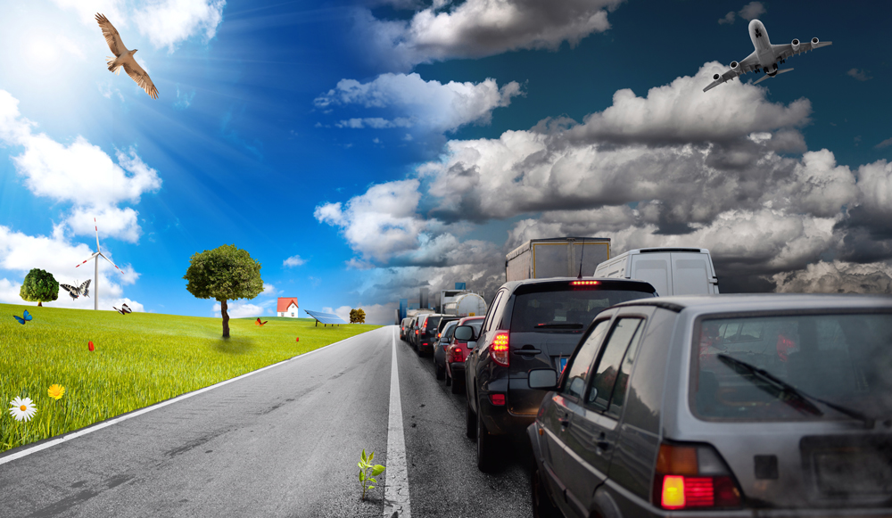
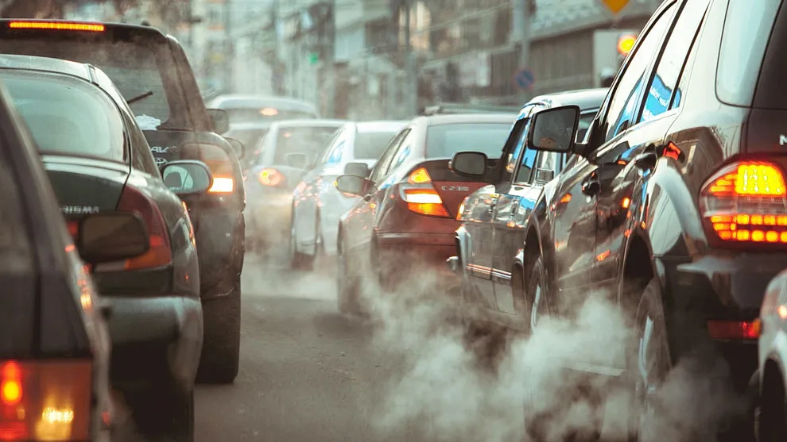

El Impacto del Transporte Tecnológico
Innovación, eficiencia y sostenibilidad en movimiento.
Saber más

.png)

Innovación, eficiencia y sostenibilidad en movimiento.
Saber más
Es la integración de tecnologías avanzadas en los medios de transporte para optimizar la movilidad, reducir costos operativos, mejorar la seguridad vial y minimizar el impacto ambiental. Esta evolución ha permitido el desarrollo de soluciones innovadoras que transforman la manera en que las personas y mercancías se trasladan a nivel global.
.webp)
El transporte es un pilar fundamental en la sociedad actual, ya que permite la movilidad de personas, bienes y servicios, facilitando el desarrollo económico, la conectividad y el acceso a oportunidades. En un mundo globalizado, los sistemas de transporte eficientes impulsan el comercio, reducen las distancias y mejoran la calidad de vida al proporcionar acceso a educación, salud y empleo. Además, la evolución del transporte tecnológico ha permitido la optimización de rutas, la reducción de emisiones contaminantes y la implementación de soluciones sostenibles, contribuyendo a la construcción de ciudades más inteligentes y sostenibles. Sin embargo, también plantea desafíos como la necesidad de infraestructuras adecuadas, la reducción del impacto ambiental y la inclusión de tecnologías accesibles para todos.
El transporte es esencial para la movilidad y el desarrollo económico, pero también es una de las principales fuentes de contaminación y consumo de recursos naturales. Los medios de transporte tradicionales, como automóviles, camiones, barcos y aviones, dependen en gran medida de combustibles fósiles, lo que genera emisiones de gases de efecto invernadero, contaminación del aire y contribuyen al cambio climático. Además, la expansión de infraestructuras de transporte, como carreteras y aeropuertos, puede provocar deforestación, fragmentación de hábitats y pérdida de biodiversidad.
Vehículos que utilizan electricidad almacenada en baterías recargables para su funcionamiento, contribuyendo a la reducción de emisiones contaminantes.
Aeroplanos que utilizan tecnologías más limpias y combustibles alternativos para reducir su impacto ambiental durante el vuelo.
Sistema de transporte que utiliza la levitación magnética para permitir que los trenes se desplacen sin contacto con los rieles, mejorando la velocidad y eficiencia energética.